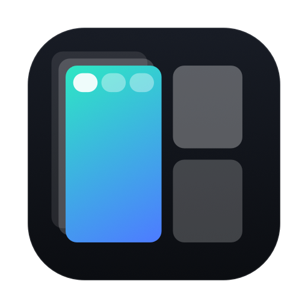
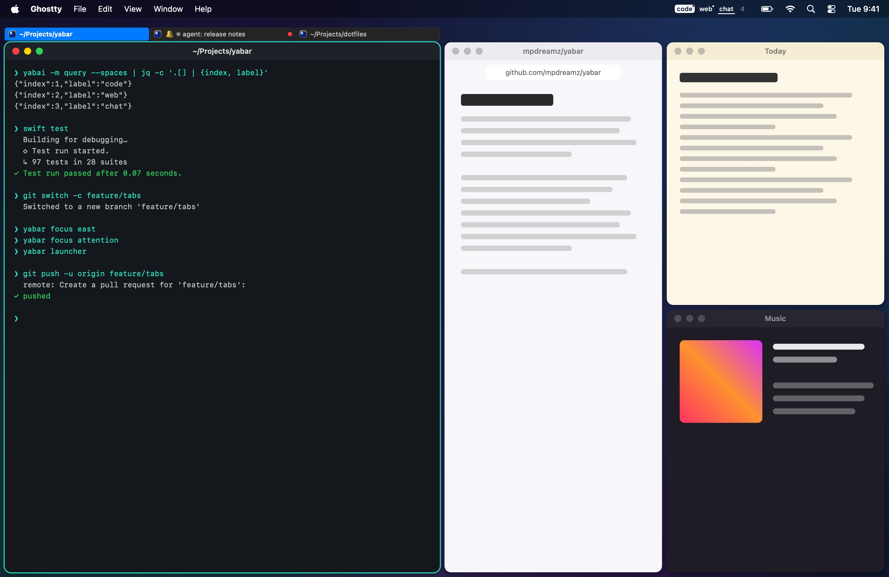
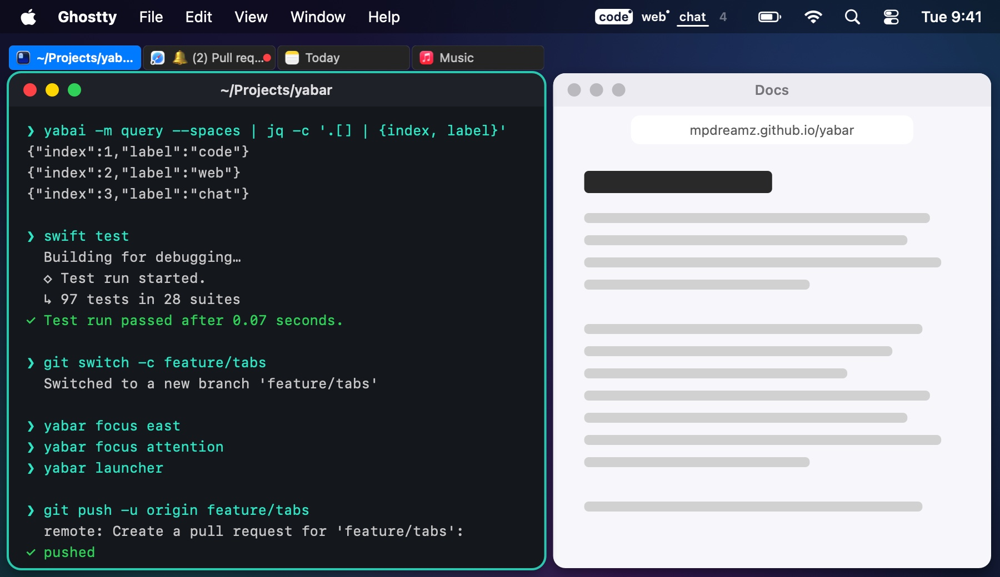
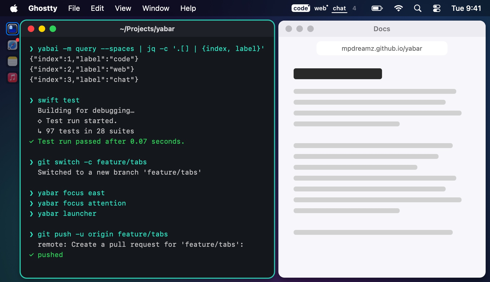
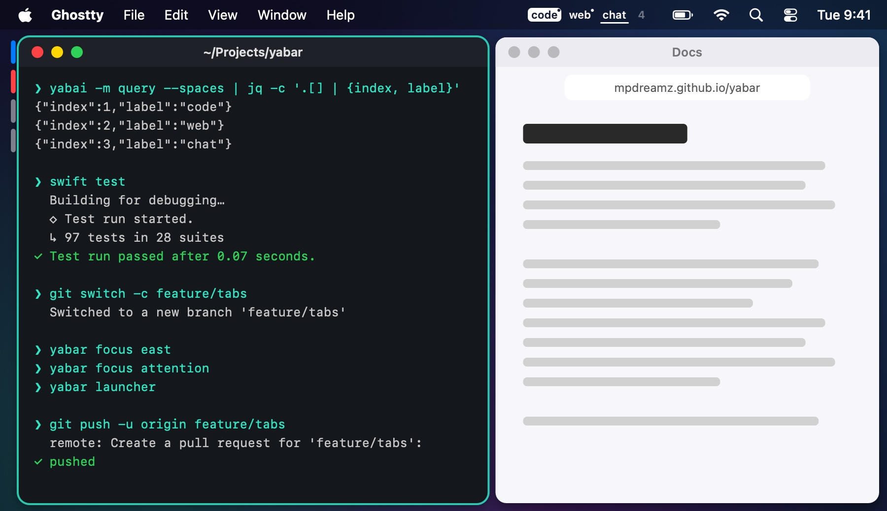
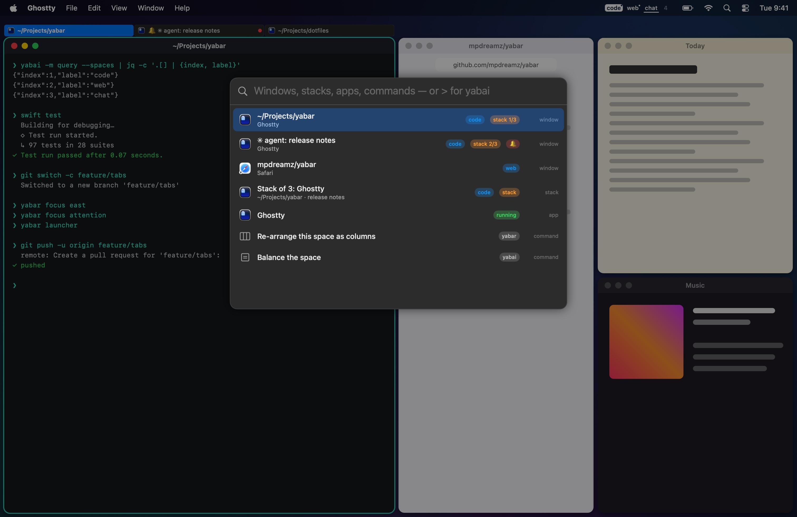
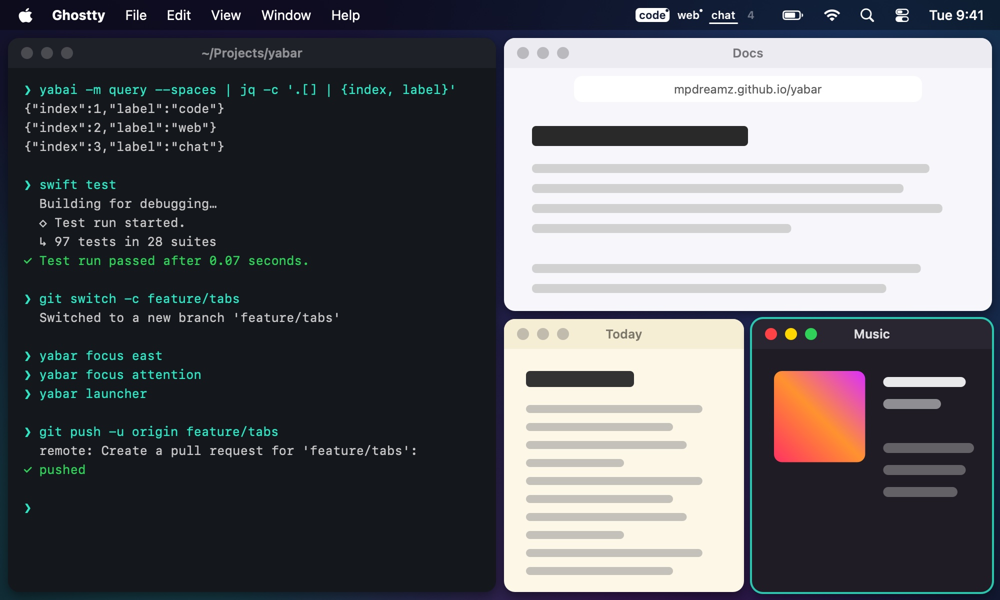
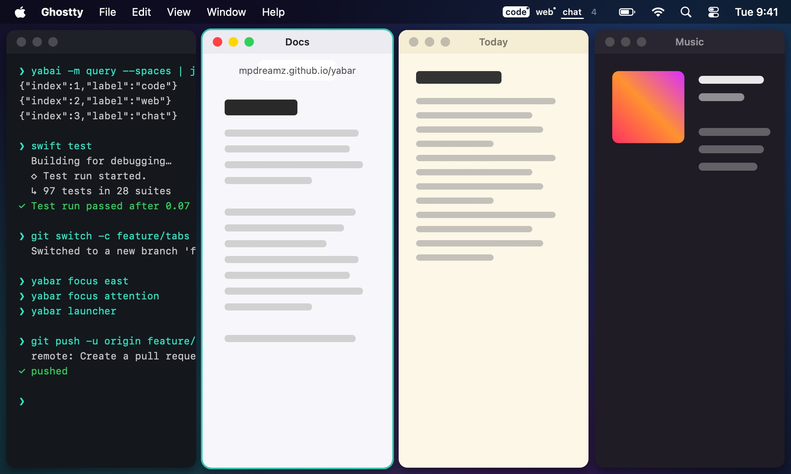
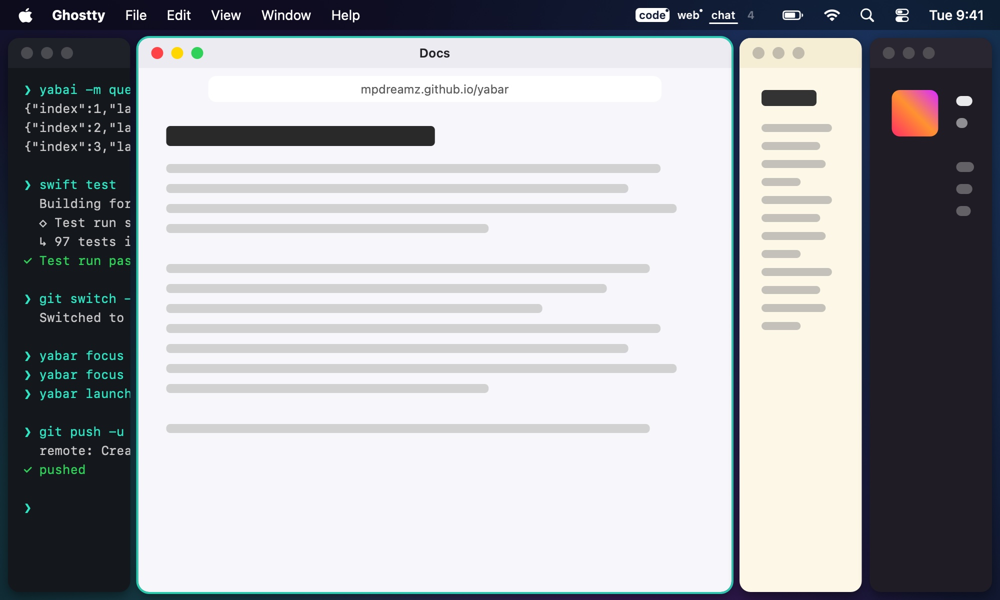

Your spaces in the menu bar. Every stack marked with icons, pills or i3-style tabs beside it. One set of keys through stacks and tiles, a launcher for every window, and layouts per display: columns instead of the spiral, and the focused window always given room.

yabai shows only the window on top. Yabar marks the rest beside it, never over it: it asks yabai for just enough room, and gives it back when the stack goes.



Along a stack, the keys step through its windows; past the end, on to the next tile, then the next display. Back into a stack, you land where you left it. The way i3 does it, from skhd.
lcmd - h : yabar focus west lcmd - j : yabar focus south lcmd - k : yabar focus north lcmd - l : yabar focus east lcmd + shift - space : yabar launcher lcmd - 0 : yabar focus attention
Windows, stacks, scratchpads, apps, and Yabar's and yabai's commands, with badges for the space, the
stack and who wants you. Enter goes there; ⌘Enter opens a new copy; > runs yabai.

Three or four columns instead of yabai's spiral, extra windows as rows or stacks, and the focused column given the golden share. Set it for the laptop's screen, the big monitor, or one labelled space.



An Apple Silicon Mac on macOS 15 or later, and yabai. yabai's scripting addition is optional: without it, clicking a space focuses one of its windows instead, and scratchpads are off.
Both, natively: stack indicators without Hammerspoon, and the spaces in the menu bar, signed and notarized.
Only per space and only while it runs: padding and gap for the indicators, and what your profiles ask. Everything
carries a yabar- label and goes back to your .yabairc's values when Yabar quits.
The cask puts yabar on your PATH; bind yabar focus, yabar launcher and
yabar scratchpad in skhd. See Keys.
Yes, MIT licensed, on GitHub.